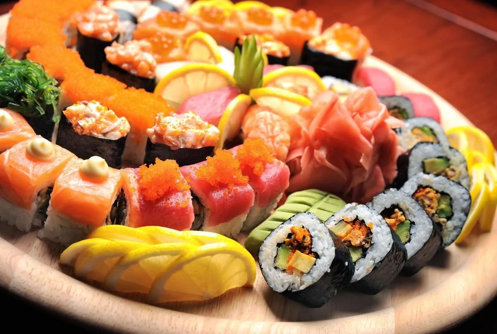

Sushi
Sushi (Japanese: 鮨 / 鮓 / 寿司, すし, MFA: [su̥ɕi]) is a traditional dish of Japanese cuisine made on the basis of rice, treated with rice vinegar or salt, and various fillings or layers, among which seafood products predominate, but can include m meat, vegetables, algae, mushrooms or eggs. Sushi can be raw, cooked or marinated.
More information!!!There!!!